KOICA ODA & Humanitarian Relief Logistics
For ten years I was the sole and exclusive shipping agent for the Korea International Cooperation Agency — KOICA — handling total logistics for the ODA projects and humanitarian aid missions run under the Ministry of Foreign Affairs.
In practice that meant chartering the vessel or the freighter, booking the slots, marking and manifesting the cargo, clearing it at both ends, and arranging the inland leg into places where inland transport is not a service you can simply buy. Korean Air and Asiana cargo charters went out under UNICEF, WHO and KOICA banners — to Brindisi for the Kosovo refugee operation in August 1999, to Mashad in Iran for Afghan refugees in December 2001, to Kabul in April 2003, and to Amman for the Iraq relief programme in June 2003.
I travelled to the field myself, to more than fifty countries, because relief cargo rarely fails at sea. It fails at a border, at a checkpoint, or over one missing signature — and those are not problems you solve from Seoul. In October 2005 that meant sitting down in Amman with the Iraqi foreign minister to discuss the return of KOICA’s 14 containers seized by insurgents near in Ar Ramadi, a town 150 kilometers west of the Lraqi capital Baghdad. Due to this incident I was forcibly removed from my role as KOICA’s shipping agent. A lawsuit was then filed against Global Express by the cargo insurer seeking subrogation, and I inevitably resigned, taking moral responsibility for the matter. After a legal battle spanning four years I won the case at the Supreme Court on 20 August 2009 [Case No. 2008Da58978].
The Kosovo truck programme in November 2001 ran through Koper, with Intereuropa as the partner on the European side — a relationship that began with my first trips to Yugoslavia in 1991. Twenty-five years later the same port is the anchor of the corridor I am building now for KOICA’s Ukraine assistance programme.
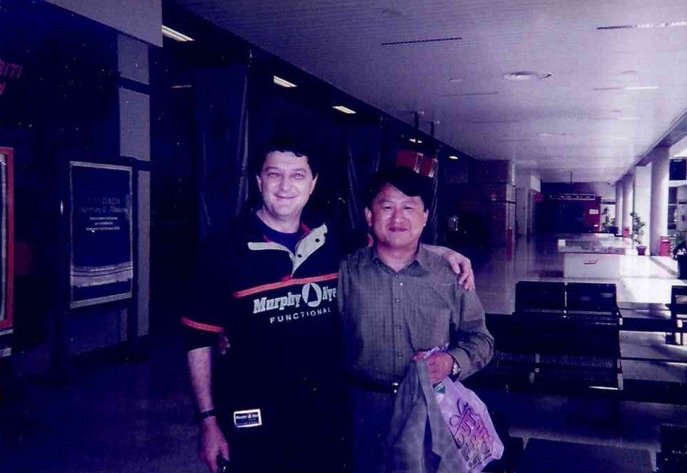
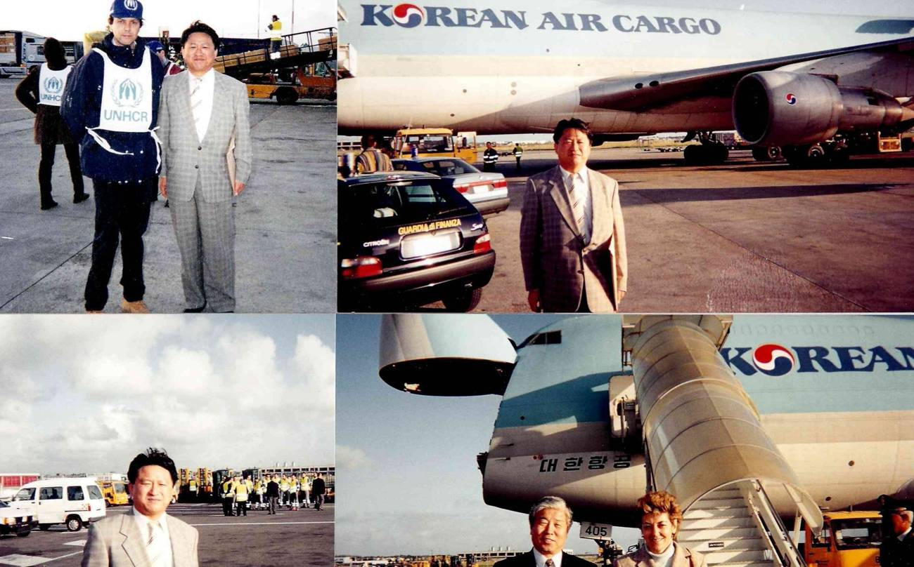
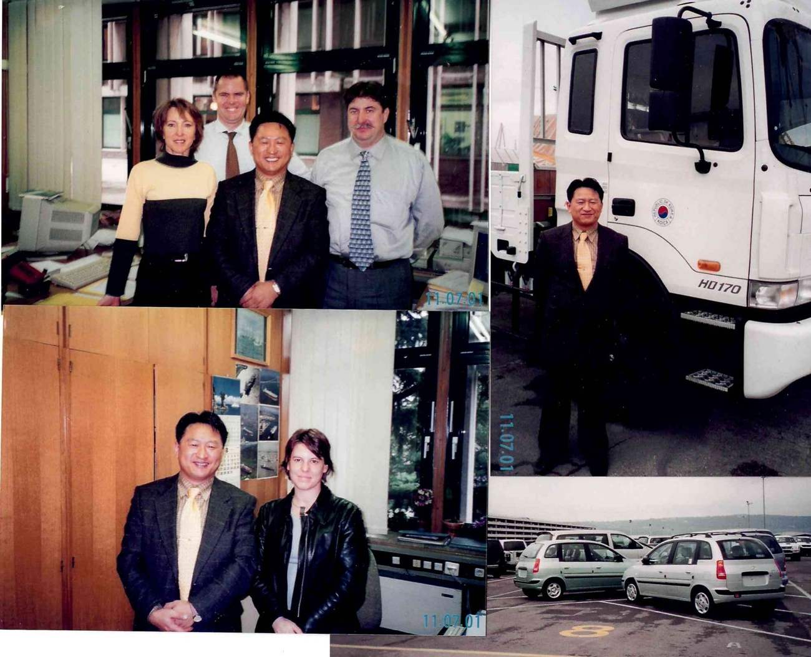
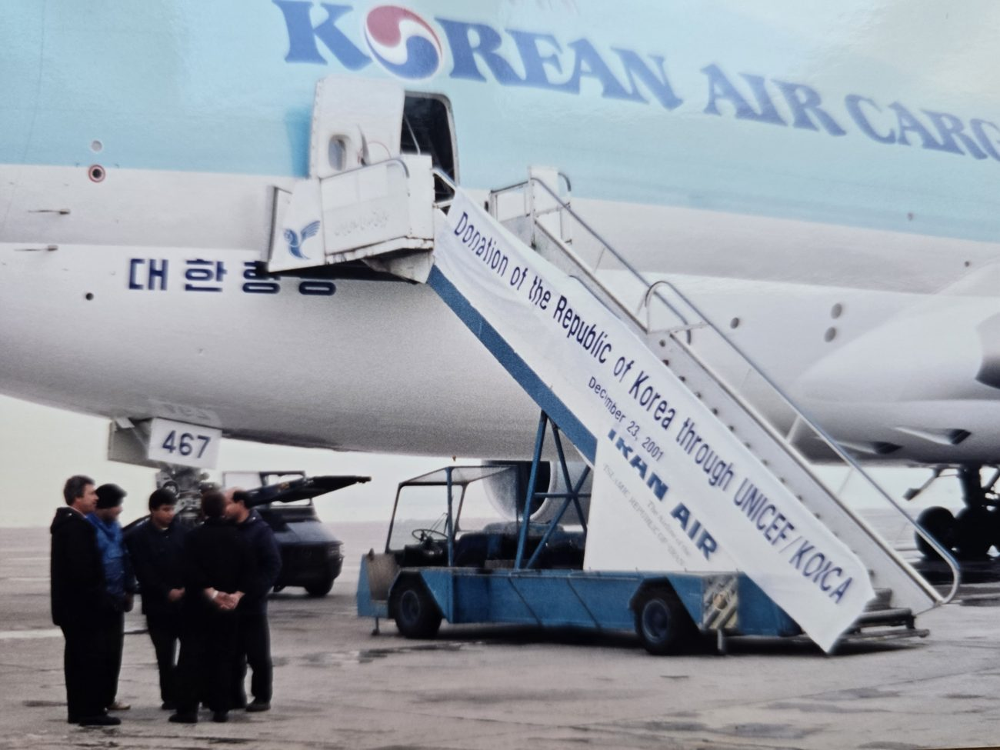
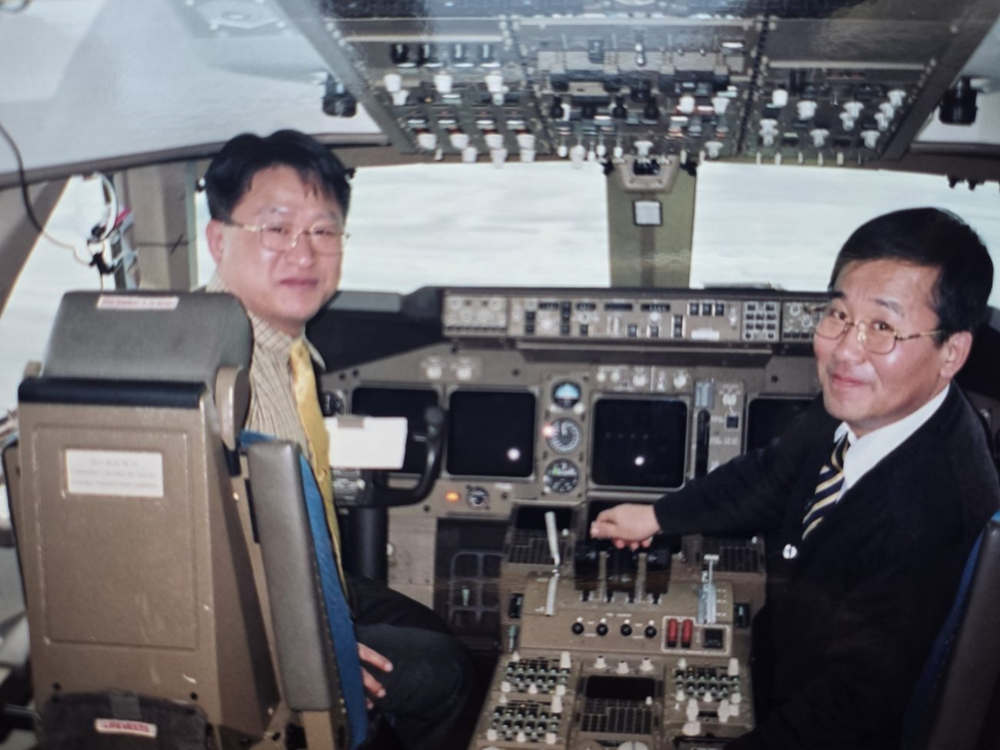
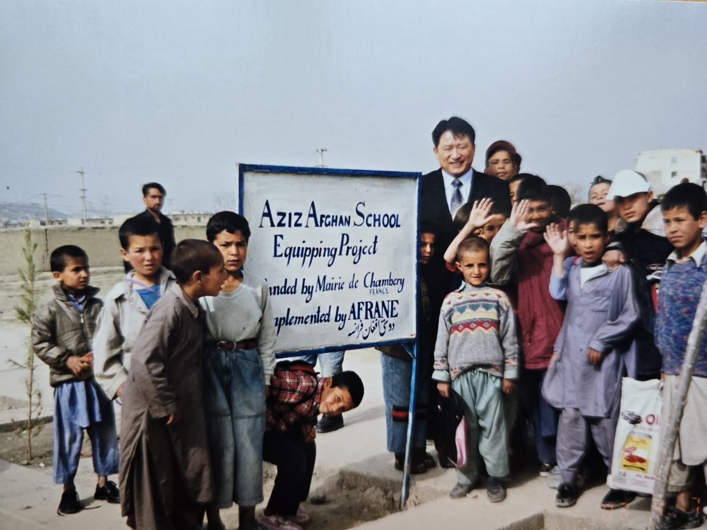
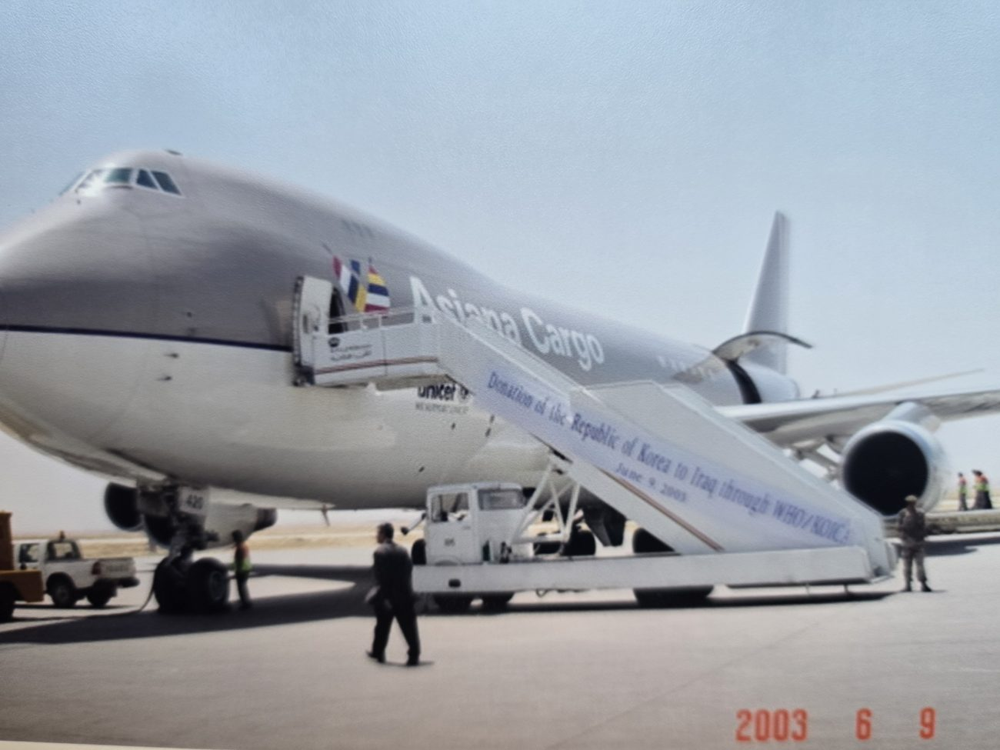
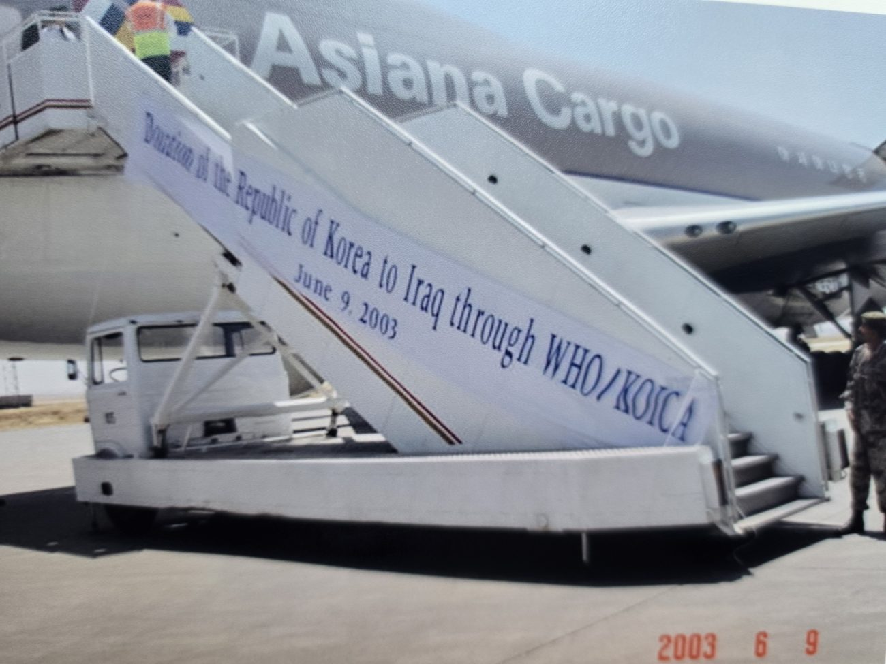
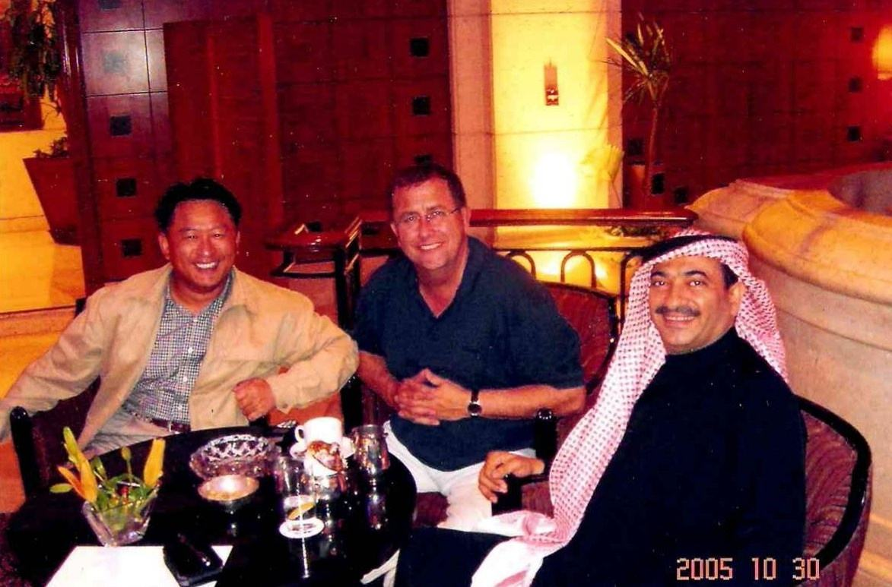
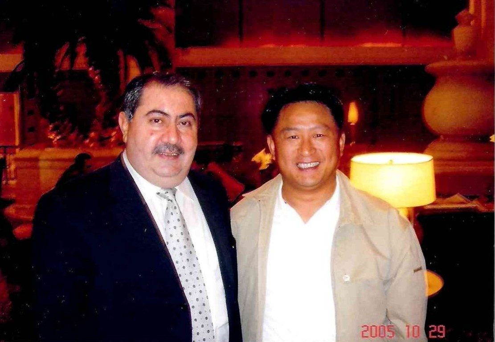
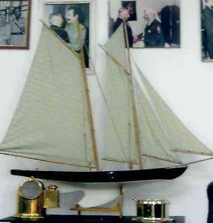
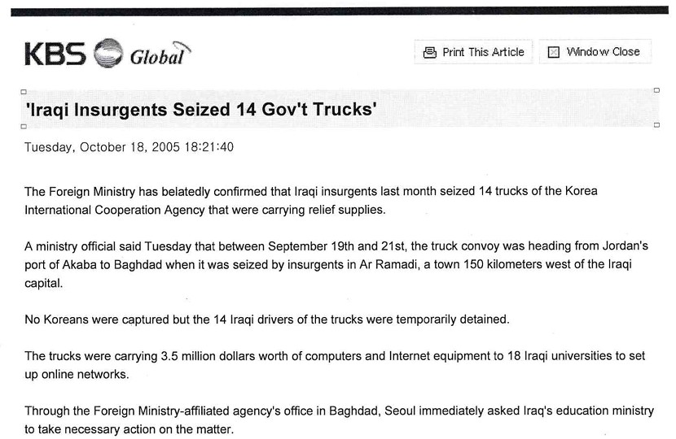
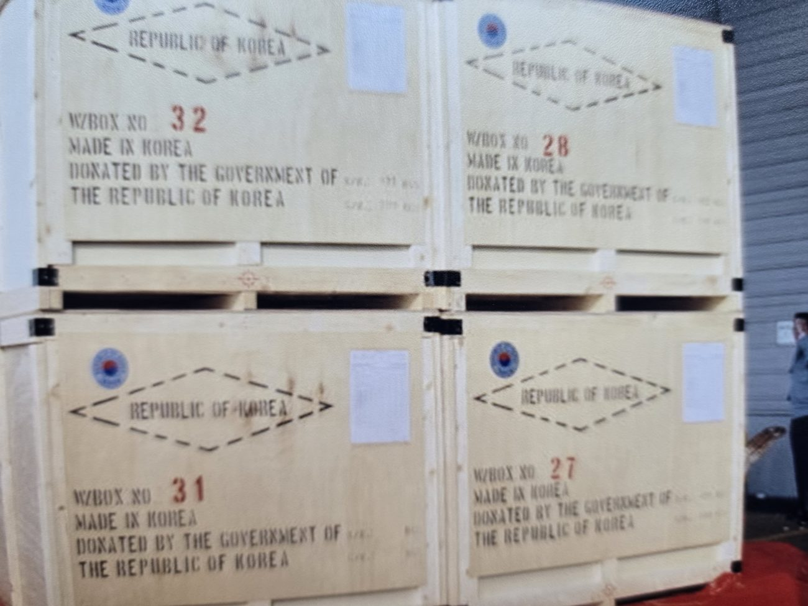